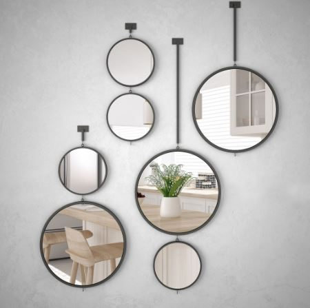

Espejos

Características del producto
Un espejo de cuerpo entero en el vestíbulo puede servir como un lugar conveniente para hacer un último vistazo antes de salir de casa, mientras que un espejo en el baño es esencial para el aseo diario.